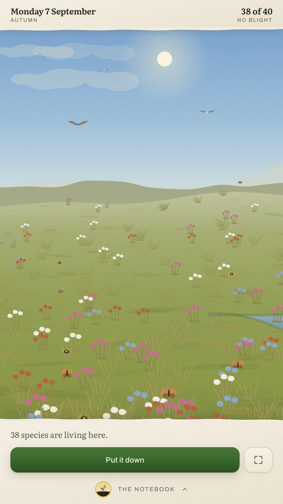
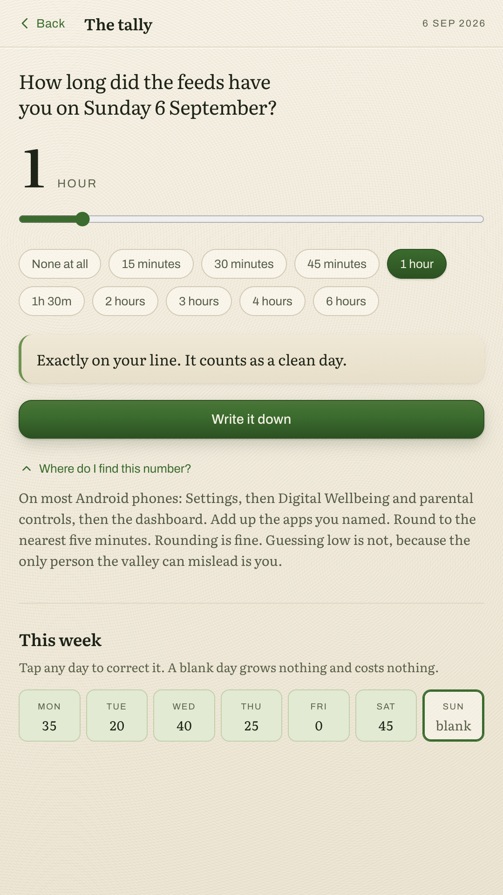
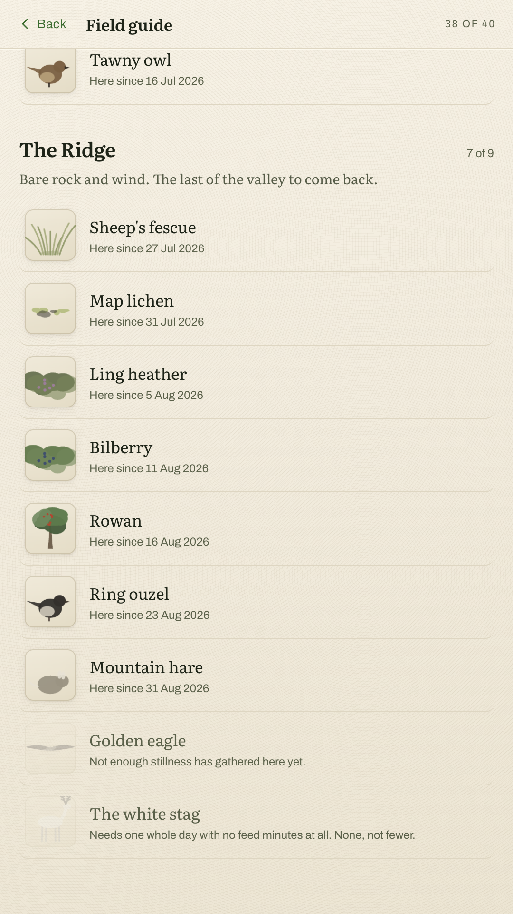
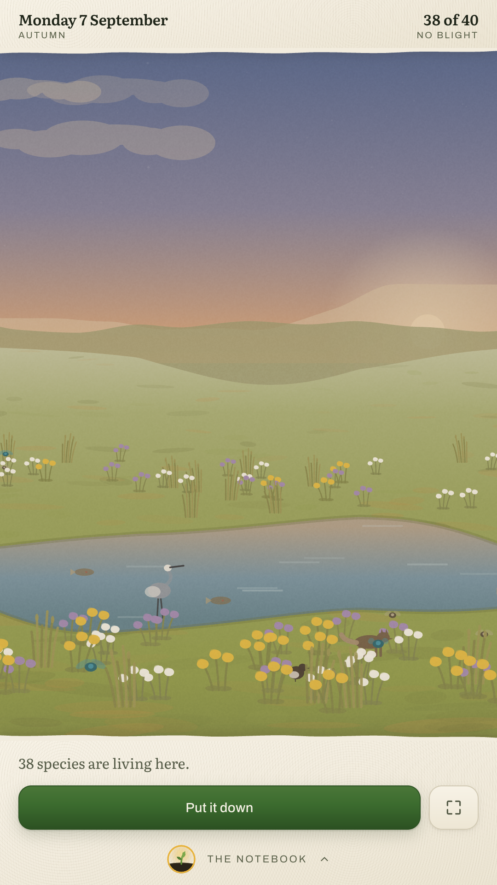
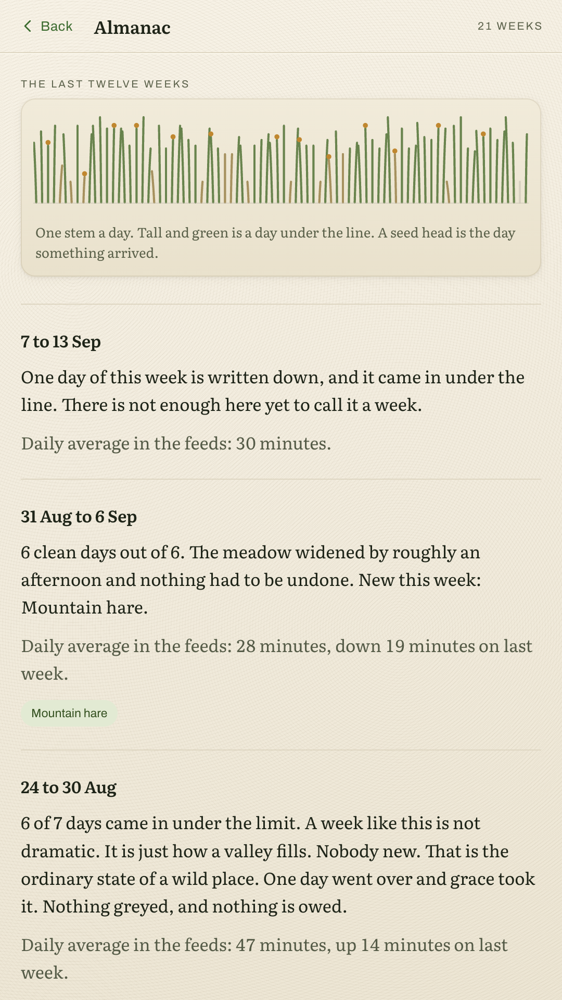

A valley that fills with living things out of the hours you did not spend scrolling. Forty species, four biomes, and nothing at all to tap for.
Get it on Google Play Free and complete. No subscription, no ads, no account.
Every other app on your phone is built to keep you looking at it.
This one is built to be closed. The valley grows while the screen is dark, and there is nothing in it you can hurry along by opening the app more often. Time in Wildergarden is not the goal, and the app says so on the second screen you ever see.

What arrives
Species arrive in a dependency web, the way a real place recovers. Clover before bees, clear water before trout, trout before the heron. The fox needs three clean days running. One species needs a whole day with the feeds untouched, and most people never see it.



So there is not one. This is the whole app, and it is the version you can install today.
All four biomes and all forty species are already in the build. There is no premium tier and no cosmetic shop.
There is no ad code in the app and no advertising identifier is read.
Nothing to sign up for, nothing to log into, nothing left behind on a server when you leave.
The app does not declare INTERNET, so Android will not let it open a connection at all. It opts out of Android backup and device transfer too, so the ledger cannot leave the phone even by accident.
Wildergarden never reads which apps you use. It asks you once a day and believes you.
At a time you pick, to close the day. Nothing in the app is designed to pull you back in.
There is no usage access permission and no background watching. The daily number is one you type in yourself. That is a real limitation and it is also the reason the privacy claim on this page is worth anything.
No app is ever locked, greyed or delayed. Blockers get uninstalled in a weak moment, which makes them a bad place to put the whole design.
No red numbers, no broken chains, no streak you can lose forever. Grace covers the first slip every week, and two clean days undo the worst day you can have. That ratio is deliberate.
Wildergarden is a wellbeing toy with an honest mechanic. It makes no medical claim and is not a substitute for help with a compulsion that is hurting you.
Come back tomorrow without coming back today.
Get it on Google Play Or open the valley in this browser from the link below.